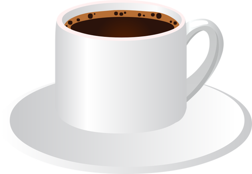

Kaffe allerede nå?

Jepp, og ta gjerne dobbelt dose. Resten av denne forelesningen trenger din fulle konsentrasjon! Spesielt krever den at du faktisk driver og regner litt på papir. Hvis du ikke er i humør til det nå, vent til en annen gang, ellers får du ikke noe ut av dette. Vi skal ta en liten pause underveis for at du får puste litt.